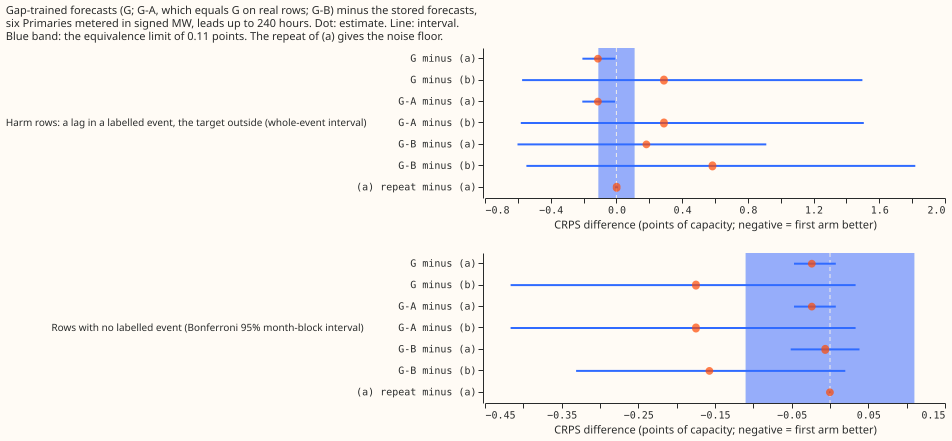
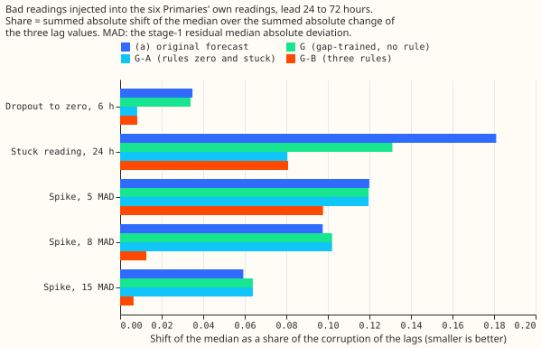
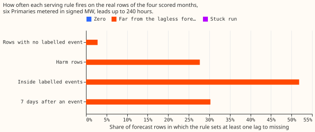
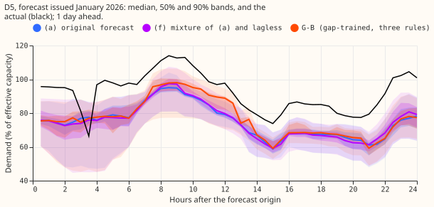
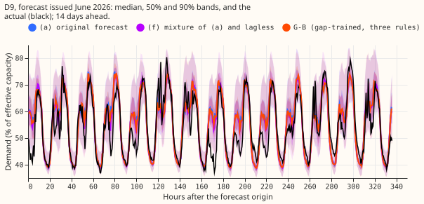
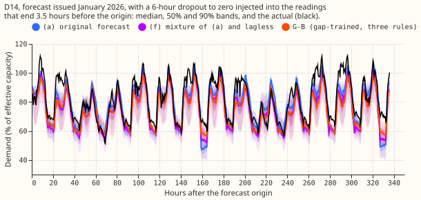
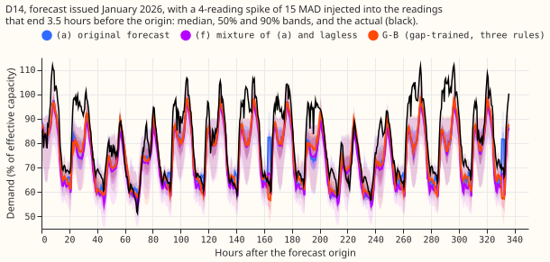
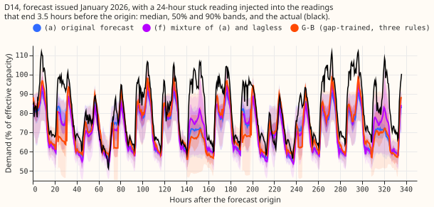
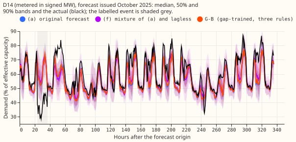

Does training the XGBoost demand forecast with 10% of its power lags randomly missing, plus a rule that treats an exactly-zero, stuck, or implausibly distant lag as missing, shield the median forecast from a dropout, a stuck reading, and a spike in the lags, without losing accuracy on rows with no labelled event?
Training the XGBoost demand forecast with 10% of its power lags randomly missing loses no accuracy, and it lets a serving rule shield the median forecast from a dropout and a stuck reading. Gap training means that, in each training row, each of the three power lags (the readings one origin lag, one day, and one week before the forecast target) is independently replaced by a missing value with probability 0.10. The rule for an exactly-zero lag and the rule for a run of 12 identical readings never fire on the real rows of the four scored months, so on real data arm G-A is identical to arm G. The rule for a lag more than 6 times the residual median absolute deviation (MAD) from the stage-1 median shields spikes of 8 times the MAD or more, but it fires on 2.8% of rows with no labelled event and adds +0.0175 to the CRPS there. The three rules together, applied to a forecast trained without gaps, are worse than no rule. NGED's event labels are incomplete, so "rows with no labelled event" may hold unlogged events, and every real-event slice undercounts. Every number is interim and unaudited, except that a separate Claude session re-derived the headline scores (see Checks).



Figures 4 and 5 show a day-ahead and a 14-day forecast with no labelled event, figures 6 to 8 show the forecasts under an injected dropout, spike, and stuck reading, and figure 9 shows a labelled event at D14 (D14 is an anonymised Primary label).






Results
Scores are the continuous ranked probability score (CRPS), the mean pinball loss over the 11
quantiles, in points of effective capacity (percent of the series' capacity). The stage-1 median is
the median forecast of experiment 391's lagless first-stage XGBoost model for the lag's time, and
the MAD is the median absolute deviation of that model's errors at the Primary. The injections add a
dropout to zero, a stuck reading, or a spike to the readings behind the lags; the shift of the
median is the change in the median forecast, as a share of the size of the injection. Harm rows are
rows whose target lies outside a labelled event but whose lag lies inside one. A contrast is the
first arm minus the second, so negative favours the first. Arms: (a) the original lags (experiment
402); (b) the lagless forecast (experiment 392); (f) their fixed 50/50 mixture; G, the gap-trained
forecast with no rule; G-A, G with the rules for a zero and for a run of 12 identical readings; G-B,
G with those two rules and the distance rule; (a-rule-2), (a) with the zero and stuck-run rules
(identical to (a) on real rows); (a-rule-3), (a) with all three rules; (a-rep), experiment 502's
CUDA repeat of (a). The signed-MW six are the 6 Primaries metered in signed megawatts (D5, D9, D10,
D11, D14, D16). Months are the resampling unit (4 scored months, 3 with labelled events). Every
interval is a month-block interval at the Bonferroni level of 99.58% for the 12 pre-registered
contrasts, and all are in contrasts.csv. Leads are 0 to 240 h unless stated.
- Fits. 24 XGBoost models of G were fitted on the GPU, one for each of the 6 Primaries and each of the 4 monthly refit dates. A rule-applied forecast was written for each of G and (a).
- Absolute scores, rows with no labelled event (326,964 half-hours). (a) 3.0959, (a-rep) 3.0958, (b) 3.2471, (f) 3.0637, G 3.0722, G-A 3.0722, G-B 3.0898, (a-rule-3) 3.1912. On harm rows (18,693 half-hours): (a) 4.047, (b) 3.645, (f) 3.630, G 3.934, G-B 4.229, (a-rule-3) 5.774.
- Noise floor. (a-rep) minus (a) is -0.00016 [-0.0012, +0.0006] on rows with no labelled event. The repeat uses the same seed, so it bounds GPU nondeterminism only. The seed and the mask draw are not repeated.
- Clean rows (rows with no labelled event). G minus (a) is -0.024 [-0.047, +0.008]; G-B minus (a) is -0.006 [-0.051, +0.039]. Both intervals lie inside ±0.11, so P2 holds. G minus (b) is -0.175 [-0.417, +0.033] and G-B minus (b) is -0.157 [-0.331, +0.020]. At 12 to 36 h, G minus (a) is -0.014 [-0.048, +0.013], and G-B minus (a) is -0.013 [-0.040, +0.013]. G-B minus G is +0.0175 [-0.013, +0.085] (by month -0.013, +0.085, +0.003, and +0.000) across all leads.
- Harm rows (a lag inside a labelled event, target outside it). G minus (a) is -0.113 [-0.207, -0.007] over 18 events. G-B minus (a) is +0.182 [-0.602, +0.913]. Leaving out one Primary moves the G-B contrast from -0.165 to +0.405, and dropping the single largest event (D16, 4,130 of the 18,693 rows) moves it from +0.182 to -0.158. The sign of that contrast is decided by one event, so the contrast is descriptive only.
- During and after events. During a labelled event, G minus (a) is +0.049 [+0.047, +0.401] and G-B minus (a) is +1.097 [+0.065, +1.130], both worse than (a). For the 7 days after an event, G minus (a) is -0.162 [-0.200, -0.091] and G-B minus (a) is +0.200 [-0.623, +0.466].
- Shift of the median under the corruption, lead 24 to 72 h, as a share of the corruption (figure 2). A dropout to zero for 6 h: (a) 0.035, G 0.034, G-A 0.008, G-B 0.008, (a-rule-2) 0.059. A stuck reading for 24 h: (a) 0.181, G 0.131, G-A 0.081, G-B 0.081, (a-rule-2) 0.353. A spike of 8 times the MAD: (a) 0.098, G 0.102, G-A 0.102, G-B 0.013. A spike of 15 times the MAD: (a) 0.059, G-B 0.006. A spike of 5 times the MAD: (a) 0.120, G-B 0.098. Over 0 to 240 h the dropout shares are 0.037 for G, 0.039 for (a), and 0.009 for G-A; the stuck share is 0.328 for (a-rule-2) against 0.181 at 24 to 72 h for (a). (a-rule-2) is better than (a) at D11 and D9 for a dropout and at D9 for a stuck reading.
- Rule firing on the injections (G-B). The distance rule newly fires in 99% of the cases with a spike of 8 times the MAD, 100% with 15 times, 24% with 5 times, and 13% with a stuck reading. The rule for a zero fires in 100% of the dropouts and the rule for a run in 100% of the stuck readings.
- Genuine step of 5% of capacity (lead 24 to 72 h). The share of the step that reaches the median is 0.09 to 0.45 depending on its length, the same for G, G-A, and G-B to within 0.01, and G-B's band width is within 0.7% of the band width without the step. The distance rule sets 0.4% to 1.4% of the lag values to missing, so it is not a detector of load-shift events (P3 holds, though the 5% step is far below the 19% to 33% threshold, so the test is weak).
- Rule firing on real rows. The rule for a zero and the rule for a run fire on none of 518,076 forecast keys. The distance rule sets at least one lag to missing on 2.8% of rows with no labelled event, 27.7% of harm rows, 51.9% of rows during an event, and 30.3% of the 7 days after. Of the rows with no labelled event, 12,042 have a lag inside an event and the distance rule fires on 36% of them. The remaining 314,922 rows have no event in the target or in any lag, and the rule fires on 1.6% of them (0.58% of lag values; the clean sweep rows give 0.46%). The false alarms sit at D5 (4.5%), D14 (3.0%), and D9 (2.0%), and are about 0% at D10, D11, and D16. Part of the false alarms may be unlabelled events. P1's false-alarm limit of 1% holds per lag value on the 314,922 rows (0.58%) and fails per row. Over all 326,964 rows with no labelled event the rate is 1.23% per lag value. A fourth flag, for a lag with no stage-1 value, is set on 167 forecast keys.
- Loss where the distance rule fires. CRPS on the 9,229 rows with no labelled event where the rule fires: (a) 5.834, G 5.716, G-B 6.338. G-B scores about 0.62 worse on those rows (a selected-row figure), which gives the +0.0175 on all rows.
- Cold nights (zenith above 95 degrees, 2 m temperature at or below 3 degrees Celsius; 17,254 half-hours). CRPS: (a) 4.670, G 4.656, G-B 4.877, (b) 5.756, (f) 4.903. Coverage of q95 is 0.741 for (a), 0.736 for G, and 0.732 for G-B (0.769, 0.763, and 0.761 at a widening of 1.15).
- Tails. On rows with no labelled event, coverage of q01, q05, q95, and q99 is 0.0033, 0.0357, 0.900, and 0.978 for G, against 0.0033, 0.0355, 0.902, and 0.978 for (a). G-B has q95 coverage 0.8996 and q99 0.9784. The pinball loss at q95 is 0.888 for G, 0.885 for G-B, and 0.895 for (a).
- Avoidable curtailment cost (all rows, six Primaries, pounds, sum of 4 months). At f = 0.9, (a) 8.90e6, G 8.86e6, G-B 9.24e6, (b) 9.20e6, (f) 8.97e6. At f = 0.75, (a) 2.14e7, G 2.16e7, G-B 2.34e7, (b) 2.58e7, (f) 2.24e7. At f = 0.5, (a) 4.82e7, G 4.82e7, G-B 5.02e7, (b) 6.04e7, (f) 4.80e7. The cost is dominated by 2026-01. G minus (a) is lower in 2 of 4 months at f = 0.9 and f = 0.5, and in 1 of 4 at f = 0.75. The cost inside events and after them is undefined, because the cost function lacks a perfect-forecast arm on those slices.
- Work at serving. Gap training adds nothing at serving. The rules for a zero and for a run need only the last 7 days of readings. The distance rule needs the stage-1 median at each lag time (a stage-1 pass over the last 7 days per series) and the MAD of the stage-1 residual.
- Predictions. P1 is partly met. A dropout (0.008) and a stuck reading (0.081) fall under 0.10 with G-A, and a spike of 8 times the MAD or more falls under 0.10 only with G-B (0.013 against 0.102 for G-A). The false-alarm rate is 0.58% per lag value but 1.6% per row. P2 holds for G, G-A, and G-B. P3 holds: the distance rule sets 0.4% to 1.4% of the lags to missing under a 5% step. P4 holds: no arm beats (f) on rows with no labelled event, as (f) scores 3.0637 against 3.0722 for G.
- Decision rule. The smallest gain worth porting G-A is zero on the shifts at a clean-row loss inside ±0.11: G-A meets it, and it adds nothing at serving. G-B must cut the shift by 0.05 beyond G-A and does so only for spikes of 8 times the MAD or more (0.09 beyond), at a loss of +0.0175 on rows with no labelled event. The stop conditions do not fire. The verdict is "more robust, not more accurate" for the rules. For gap training alone the verdict is "no loss, with a favourable point estimate": the interval includes zero, and the dropout and stuck shifts fall only when the rules are added (0.034 and 0.131 for G against 0.008 and 0.081 for G-A).
- Checks. A separate Claude session re-derived the scores of (a), G, G-A, and G-B from the stored forecasts (326,964 shared half-hours; a 3.0959, G 3.0722, G-B 3.0898) and confirmed the contrasts. It checked that the distance rule uses no reading younger than the origin minus 3.5 h, that the gap mask is applied only when training, and a hand-built dropout of 12 half-hours at D5 gave the same lags and flags as the module. The median minus the mean of the 11 quantiles is small and similar across arms at every Primary. The MAE of the median on rows with no labelled event is 5.417 for (a), 5.385 for G, 5.426 for G-B, and 5.666 for (b) (points of capacity).
Caveats
- One event decides the harm-row contrast of the distance rule. The leave-one-Primary-out range is -0.165 to +0.405 and dropping event 55 at D16 flips the sign. No harm-row claim about G-B is made.
- The noise floor is a same-seed repeat. The seed and the gap-mask draw are not repeated, so the gain of G over (a) (-0.024) has no bound on seed variance. G beats (a) at each of the six Primaries (-0.004 to -0.036), and that consistency supports the sign of the gain.
- G-A is not an independent arm. It equals G bitwise on real rows because the rules for a zero and a run never fire there, so the 12 pre-registered contrasts are 8 distinct comparisons. The injections for a dropout and a stuck reading are exactly what those two rules match, so G-A's 0.008 shows how G handles a missing lag, not how well the rules detect.
- The distance rule only catches large departures. At 6 times the MAD the threshold is 19.0% to 33.5% of capacity depending on the Primary. A spike of 5 times the MAD is caught in 24% of cases.
- The training masks differ from serving masks. Training draws each lag of each row independently, while serving sets a lag missing for every lead of an origin at once. This was not tested.
- Labels are incomplete. Part of the 1.6% of false alarms may be unlabelled events.
Not done
- No fit used a different seed or gap rate, and the 10% gap rate, the 6 times MAD distance, and the 12-step run are single settings.
- G was fitted at the six Primaries only. The MVA-only eight were not run.
- BG2 and
manual_heuristicwere not reproduced on these rows. - Real-event rows were not NRA-corrected, and avoidable curtailment inside and after events is undefined.
Running the scripts
- Running the scripts needs
PYTHONPATHentries for the folders of experiments 87, 377, 381, 383, 390, 391, 392, 402, and 465.